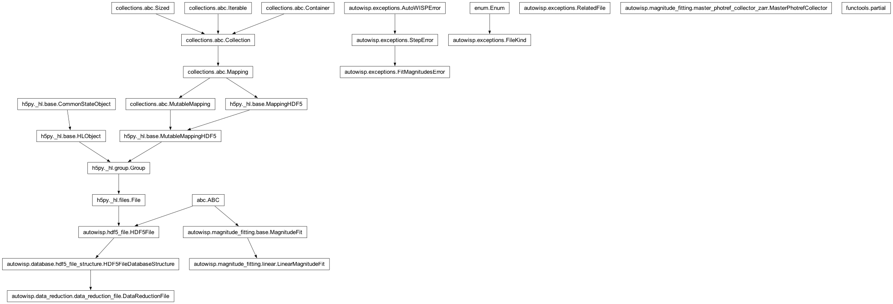

autowisp.magnitude_fitting.iterative_refit module
Class Inheritance Diagram

Interface for performing iterative magnitude fitting.
- autowisp.magnitude_fitting.iterative_refit._get_common_header(fit_dr_filenames)[source]
Return header containing all keywords common to all input frames.
related_filesclassifier for a magnitude-fit work item.The item is the DR file being fit; the batch is fit against the single photometric reference (and, once it exists, the master photometric reference). Module-level so a
partialbinding the references is picklable to the workers.
- autowisp.magnitude_fitting.iterative_refit.iterative_refit(fit_dr_filenames, *, single_photref_dr_fname, catalog_sources, configuration, mark_start, mark_end, path_substitutions)[source]
Iteratively performa magnitude fitting/generating master until convergence.
- Parameters:
fit_dr_filenames (str iterable) – A list of the data reduction files to fit.
single_photref_dr_fname (str) – The name of the data reduction file of the single photometric reference to use to start the magnitude fitting iterations.
catalog (pandas.DataFrame) – The the catalog to use as extra information in magnitude fitting terms and for excluding sources from the fit.
configuration –
Passed directly as the config argument to LinearMagnitudeFit.__init__() but it must also contain the following .. attribute:: * num_parallel_processes
the the maximum number of magnitude fitting parallel processes to use.
- type:
int
- \* max_photref_change
the maximum square average change of photometric reference magnitudes to consider the iterations converged.
- Type:
- \* master_photref_fname_format
A format string involving a {magfit_iteration} substitution along with any variables from the header of the single photometric reference or passed through the path_substitutions arguments, that expands to the name of the file to save the master photometric reference for a particular iteration.
- Type:
- \* magfit_stat_fname_format
Similar to
master_photref_fname_format, but defines the name to use for saving the statistics of a magnitude fitting iteration.- Type:
- \* num_parallel_processes
How many processes to use for simultaneus fitting.
- Type:
- \* master_scatter_fit_terms
Terms to include in the fit for the scatter when deciding which stars to include in the master.
- Type:
mark_start (callable) – A function called at the start of each DR file fitting.
mark_end (callable) – A function called after each DR file has finished fitting.
max_iterations (int) – The maximum number of iterations of deriving a master and re-fitting to allow.
path_substitutions (dict) – Any variables to substitute in
master_photref_fname_formator to pass to data reduction files to identify components to use in the fit.
- Returns:
The filename of the last master photometric reference created.